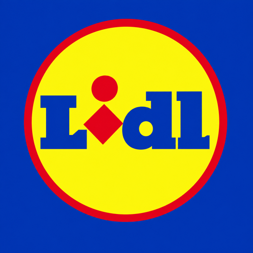

VÁSÁRLÓ SZIMULÁTOR
Hűségpont: 0
Legjobb eredmény: 0 Ft

VÁSÁRLÓ SZIMULÁTORKezdetben csak egy voltál a sok szürke vásárló közül. Szürke kabát, szürke nadrág, szürke hétköznapok — senki sem nézett utánad kétszer a zöldséges polcnál.
Aztán egy nap észrevetted: vannak, akik másképp tolják a kocsit. Magabiztosan, célratörően, mintha ismernék a bolt minden zegzugát. Kék-sárga cipőben. Logós pulcsiban. Ők a törzsvásárlók — a bolt igazi legendái.
Innentől a te sztorid is ez: minden összegyűjtött termékkel, minden bepattant gyorspénztári kombóval hűségpontot szerzel. Ezekből pedig apránként lecserélheted a szürke ruhákat valódi, márkás felszerelésre — amíg végül te magad is a bolt élő legendájává nem válsz.
Nem sietünk. A stílus időbe telik. De minden egyes bevásárlás közelebb visz. 🛒✨
Hogy mozgok?
PC-n WASD vagy a nyilak, mobilon a bal alsó joystick. Ha sietsz, tartsd lenyomva a Shift-et (vagy koppints a "FUT" gombra) — így gyorsabban gurul a kocsid!
Hogy veszem fel a termékeket?
Sétálj oda egy lebegő, forgó termékhez, és nyomd meg az E billentyűt (mobilon a "FELVESZ" gombot). Ha közel vagy, egy kis felirat is jelzi, hogy éppen mit tudsz felvenni.
Mi az az "Akciós roham"?
Időnként felbukkan egy különleges, villogó akciós termék. Csak korlátozott ideig érhető el, szóval ha meglátod a piros figyelmeztető sávot a képernyő tetején, indulj érte gyorsan — extra hűségpontot ér!
Hogy fizetek?
Ha legalább egy termék van a kosaradban, sétálj oda bármelyik pénztárhoz. Automatikusan elindul a gyorspénztár-játék: nyomd meg a gombot pont akkor, amikor a csúszka a zöld zónában jár. Minél többször találsz, annál nagyobb a bónuszod.
Mire jók a hűségpontok?
Az Öltözőszekrényben ruhákra, kiegészítőkre költheted őket — cipő, zokni, póló, pulóver, kabát, rövidnadrág, hátizsák, mind a te ízlésed szerint kombinálható. Kezdetben szürke, hétköznapi ruhában vásárolsz, akárcsak a bolt többi vendége — de minél többet gyűjtesz, annál inkább átalakulhatsz igazi, márkás vásárlóvá. Ami egyszer kioldottad, örökre a tiéd marad. (A háttértörténetet a "Sztori" menüpontban olvashatod.)
Jó vásárlást! 🛒